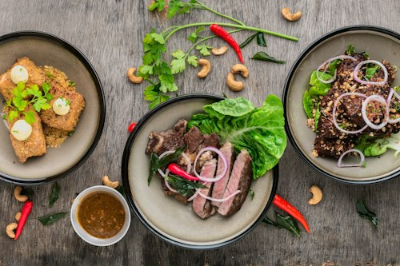

La comida es una de las mejores formas de conocer otras culturas. En este proyecto, quiero compartir algunos de los platos más icónicos de diferentes partes del mundo.
Cada receta tiene su propia historia, ingredientes típicos y un sabor único. En esta página iremos viendo diferentes opciones para todos los gustos.

Para aprender más sobre recetas e ingredientes, visita esta web de cocina.
Puedes ver los datos estructurados en mi archivo datos.xml.